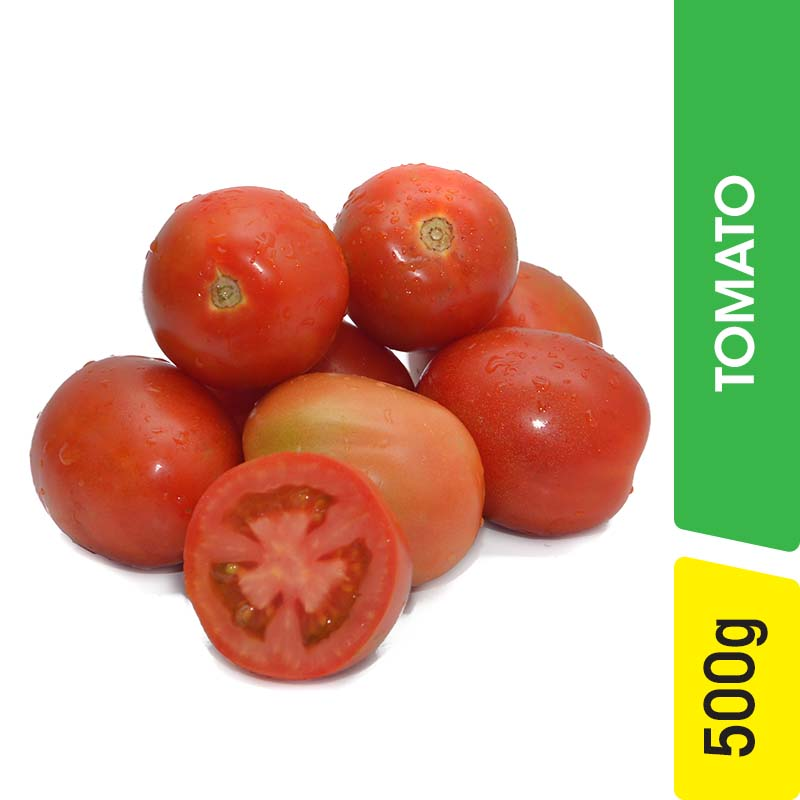

Big Onion

Potatoes

Tomatoes
Green Chilles

Coconut
Green Beans
BeetRoot
Red Onions
Lettuce
Mint
Broccoli
Celery
Red Pepper

At Prime Mart, our vegetable section is bursting with color, freshness, and flavor. We are passionate about providing
you with the finest vegetables that make every meal a delight.
Whether you're whipping up a quick salad or preparing a gourmet
feast, you'll find everything you need right here.
Commitment to sustainability
We are committed to sustainable practices and work closely with local farmers who share our values.
Our emphasis on reducing waste, supporting eco-friendly farming methods, and offering a variety of organic options helps
ensure a healthier planet and healthier you.
Our selection
We believe in offering only the freshest vegetables, sourced directly from local farms and trusted suppliers.
Each day, our shelves are stocked with crisp, vibrant vegetables that are packed with nutrients and flavor.
You can taste the difference in every bite.